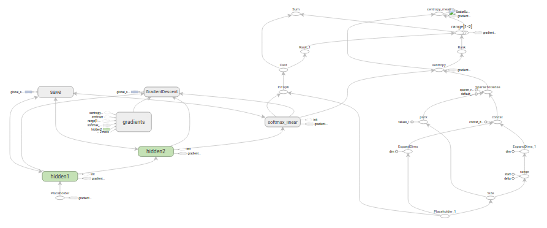

Tensorflow运行方式
Table of Contents
本章的目标：展示如何利用TensorFlow使用MNIST数据集训练并评估一个用于识别手写数字的简易前馈神经网络
准备文件
下载
在 run_training() 方法的一开始， input_data.read_data_sets() 函数会确保你的本地训练文件夹中，已经下载了正确的数据，然后将这些数据解压并返回一个含有DataSet实例的字典：
data_sets = input_data.read_data_sets(FLAGS.train_dir, FLAGS.fake_data)
注意：fake_data标记是用于单元测试的
| 数据集 | 目的 |
| data_sets.train | 55000个图像和标签（labels），作为主要训练集 |
| data_sets.validation | 5000个图像和标签，用于迭代验证训练准确度 |
| data_sets.test | 10000个图像和标签，用于最终测试训练准确度 |
输入与占位符
placeholder_inputs()函数将生成两个tf.placeholder操作，定义传入图表中的shape参数，shape参数中包括batch_size值，后续还会将实际的训练用例传入图表：
images_placeholder = tf.placeholder(tf.float32, shape=(batch_size, IMAGE_PIXELS)) labels_placeholder = tf.placeholder(tf.int32, shape=(batch_size))
在训练循环的后续步骤中，传入的整个图像和标签数据集会被切片，以符合每一个操作所设置的batch_size值，占位符操作将会填补以符合这个batch_size值。然后使用feed_dict参数，将数据传入sess.run()函数
构建图表
在为数据创建占位符之后，就可以运行mnist.py文件，经过三阶段的模式函数操作：
- inference(): 尽可能地构建好图表，满足促使神经网络向前反馈并做出预测的要求
- loss(): 往inference图表中添加生成损失所需要的操作
- training(): 往损失图表中添加计算并应用梯度所需的操作

推理
inference()函数会尽可能地构建图表，做到返回包含了预测结果的Tensor
- 接受图像占位符为输入
- 借助ReLu激活函数，构建一对完全连接层
- 一个有着十个节点、指明了输出logits模型的线性层
每一层都创建于一个唯一的 tf.name_scope 之下，创建于该作用域之下的所有元素都将带有其前缀
with tf.name_scope('hidden1') as scope:
初始化
在定义的作用域中，每一层所使用的权重和偏差都在 tf.Variable实例 中生成，并且包含了各自期望的shape：
weights = tf.Variable( tf.truncated_normal([IMAGE_PIXELS, hidden1_units], stddev=1.0 / math.sqrt(float(IMAGE_PIXELS))), name='weights') biases = tf.Variable(tf.zeros([hidden1_units]), name='biases')
- 当这些层是在 hidden1 作用域下生成时，赋予权重变量的独特名称将会是 hidden1/weights
每个变量在构建时，都会获得初始化操作：
- 通过 tf.truncated_normal 函数初始化权重变量，给赋予的shape则是一个二维tensor：
- 第一个维度代表该层中权重变量所连接的单元数量
- 第二个维度代表该层中权重变量所连接到的单元数量
- 对于名叫hidden1的第一层，相应的维度则是[IMAGE_PIXELS, hidden1_units]，因为权重变量将图像输入连接到了hidden1层
- tf.truncated_normal初始函数将根据所得到的均值和标准差，生成一个随机分布
+通过tf.zeros函数初始化偏差变量，确保所有偏差的起始值都是0
- 它们的shape则是其在该层中所接到的单元数量
- 通过 tf.truncated_normal 函数初始化权重变量，给赋予的shape则是一个二维tensor：
操作
图表的三个主要操作，分别是：
- 两个tf.nn.relu操作，它们中嵌入了隐藏层所需的tf.matmul
- logits模型所需的另外一个tf.matmul
三者依次生成，各自的tf.Variable实例则与输入占位符或下一层的输出tensor所连接：
hidden1 = tf.nn.relu(tf.matmul(images, weights) + biases) hidden2 = tf.nn.relu(tf.matmul(hidden1, weights) + biases) logits = tf.matmul(hidden2, weights) + biases
最后，程序会返回包含了输出结果的 logits Tensor
损失
loss()函数通过添加所需的损失操作，进一步构建图表
首先labels_placeholer中的值，将被编码为一个含有1-hot values的Tensor。例如，如果类标识符为“3”，那么该值就会被转换为 [0, 0, 0, 1, 0, 0, 0, 0, 0, 0]：
batch_size = tf.size(labels) labels = tf.expand_dims(labels, 1) indices = tf.expand_dims(tf.range(0, batch_size, 1), 1) concated = tf.concat(1, [indices, labels]) onehot_labels = tf.sparse_to_dense( concated, tf.pack([batch_size, NUM_CLASSES]), 1.0, 0.0)
之后，又添加一个 tf.nn.softmax_cross_entropy_with_logits 操作，用来比较inference()函数与1-hot标签所输出的logits Tensor：
cross_entropy = tf.nn.softmax_cross_entropy_with_logits(logits, onehot_labels, name='xentropy')
然后，使用 tf.reduce_mean 函数，计算batch维度（第一维度）下交叉熵的平均值，将该值作为总损失：
loss = tf.reduce_mean(cross_entropy, name='xentropy_mean')
最后，程序会返回包含了损失值的Tensor
训练
training()函数添加了通过梯度下降将损失最小化所需的操作
首先，该函数从loss()函数中获取损失Tensor，将其交给 tf.scalar_summary ，后者在与SummaryWriter配合使用时，可以向事件文件中生成汇总值，每次写入汇总值时，它都会释放损失Tensor的当前值：
tf.scalar_summary(loss.op.name, loss)
接下来，实例化一个 tf.train.GradientDescentOptimizer ，负责按照所要求的学习效率应用梯度下降法：
optimizer = tf.train.GradientDescentOptimizer(FLAGS.learning_rate)
之后，生成一个变量用于保存全局训练步骤的数值，并使用minimize()函数更新系统中的三角权重、增加全局步骤的操作。根据惯例，这个操作被称为 train_op，是TensorFlow会话诱发一个完整训练步骤所必须运行的操作：
global_step = tf.Variable(0, name='global_step', trainable=False) train_op = optimizer.minimize(loss, global_step=global_step)
最后，程序返回包含了 训练操作输出 结果的Tensor
训练模型
一旦图表构建完毕，就通过 fully_connected_feed.py 文件中的用户代码进行循环地迭代式训练和评估
图表
在run_training()这个函数的一开始，是一个Python语言中的 with 命令，这个命令表明所有已经构建的 操作都要与默认的tf.Graph全局实例 关联起来：
with tf.Graph().as_default():
tf.Graph实例 是一系列可以作为整体执行的操作：
TensorFlow的大部分场景只需要依赖默认图表一个实例即可 利用多个图表的更加复杂的使用场景也是可能的
会话
完成全部的构建准备、生成全部所需的操作之后，就可以创建一个tf.Session，用于运行图表：
sess = tf.Session()
另外，也可以利用 with代码块生成Session ，限制作用域：
with tf.Session() as sess:
Session函数中没有传入参数，表明该代码将会依附于（如果还没有创建会话，则会创建新的会话）默认的本地会话
生成会话之后，所有tf.Variable实例都会立即通过调用各自初始化操作中的sess.run()函数进行初始化：
init = tf.initialize_all_variables()
sess.run(init)
sess.run()方法将会运行图表中与作为参数传入的操作相对应的完整子集。在初次调用时，init操作只包含了变量初始化程序tf.group。图表的其他部分不会在这里，而是在下面的训练循环运行
训练循环
完成会话中变量的初始化之后，就可以开始训练了。
训练的每一步都是通过用户代码控制，而能实现有效训练的最简单循环就是：
for step in xrange(max_steps): sess.run(train_op)
这里要更为复杂一点，原因是必须把输入的数据根据每一步的情况进行切分，以匹配之前生成的占位符
向图表提供反馈
执行每一步时，代码会生成一个反馈字典，其中包含对应步骤中训练所要使用的例子，这些例子的哈希键就是其所代表的 占位符操作
fill_feed_dict 函数会查询给定的DataSet，索要下一批次batch_size的图像和标签，与占位符相匹配的Tensor则会包含下一批次的图像和标签：
images_feed, labels_feed = data_set.next_batch(FLAGS.batch_size)
然后，以占位符为哈希键，创建一个Python字典对象，键值则是其代表的反馈Tensor：
feed_dict = {
images_placeholder: images_feed,
labels_placeholder: labels_feed,
}
这个字典随后作为feed_dict参数，传入sess.run()函数中，为这一步的训练提供输入样例
检查状态
在运行sess.run函数时，要在代码中明确其需要获取的两个值： [train_op, loss]
for step in xrange(FLAGS.max_steps): feed_dict = fill_feed_dict(data_sets.train, images_placeholder, labels_placeholder) _, loss_value = sess.run([train_op, loss], feed_dict=feed_dict)
因为要获取这两个值，sess.run()会返回一个有两个元素的元组。其中每一个Tensor对象，对应了返回的元组中的numpy数组，而这些数组中包含了当前这步训练中对应Tensor的值。由于train_op并不会产生输出，其在返回的元祖中的对应元素就是None，所以会被抛弃。但是，如果模型在训练中出现偏差，loss Tensor的值可能会变成NaN，所以要获取它的值，并记录下来
假设训练一切正常，没有出现NaN，训练循环会每隔100个训练步骤，就打印一行简单的状态文本，告知用户当前的训练状态：
if step % 100 == 0: print 'Step %d: loss = %.2f (%.3f sec)' % (step, loss_value, duration)
保存检查点
为了得到可以用来后续恢复模型以进一步训练或评估的检查点文件，实例化一个 tf.train.Saver
saver = tf.train.Saver()
在训练循环中，将定期调用 saver.save() 方法，向训练文件夹中写入包含了当前所有可训练变量值得检查点文件：
saver.save(sess, FLAGS.train_dir, global_step=step)
这样，以后就可以使用 saver.restore() 方法，重载模型的参数，继续训练：
saver.restore(sess, FLAGS.train_dir)
评估模型
每隔一千个训练步骤，代码会尝试使用训练数据集与测试数据集，对模型进行评估。do_eval函数会被调用三次，分别使用训练数据集、验证数据集合测试数据集：
print 'Training Data Eval:' do_eval(sess, eval_correct, images_placeholder, labels_placeholder, data_sets.train) print 'Validation Data Eval:' do_eval(sess, eval_correct, images_placeholder, labels_placeholder, data_sets.validation) print 'Test Data Eval:' do_eval(sess, eval_correct, images_placeholder, labels_placeholder, data_sets.test)
构建评估图表
在打开默认图表之前，应该先调用 get_data(train=False) 函数，抓取测试数据集
test_all_images, test_all_labels = get_data(train=False)
在进入训练循环之前，应该先调用mnist.py文件中的 evaluation 函数，传入的logits和标签参数要与loss函数的一致。这样做事为了先构建Eval操作：
eval_correct = mnist.evaluation(logits, labels_placeholder)
evaluation函数会生成tf.nn.in_top_k 操作，如果 在K个最有可能的预测中可以发现真的标签，那么这个操作就会将模型输出标记为正确 。这里把K的值设置为1，也就是只有在预测是真的标签时，才判定它是正确的
评估图表的输出
创建一个循环，往其中添加feed_dict，并在调用sess.run()函数时传入eval_correct操作，目的就是用给定的数据集评估模型
for step in xrange(steps_per_epoch): feed_dict = fill_feed_dict(data_set, images_placeholder, labels_placeholder) true_count += sess.run(eval_correct, feed_dict=feed_dict)
true_count 变量会累加所有in_top_k操作判定为正确的预测之和。接下来，只需要将正确测试的总数，除以例子总数，就可以得出准确率了：
precision = float(true_count) / float(num_examples) print ' Num examples: %d Num correct: %d Precision @ 1: %0.02f' % ( num_examples, true_count, precision)